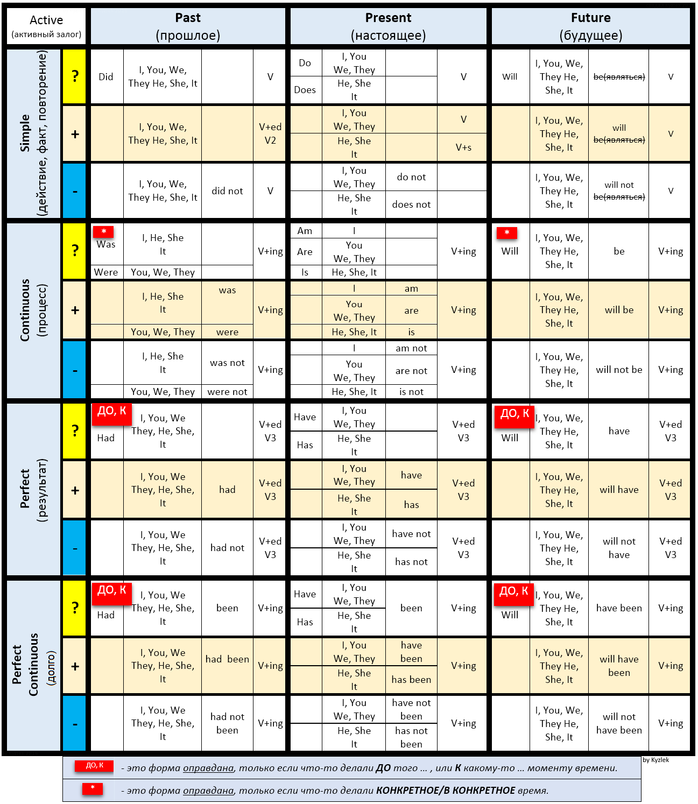

Активная форма (активный залог) - это когда лицо или предмет, выраженное подлежащим, само производит действие: Он написал эту книгу.
(Есть еще пассивный залог. Эта таблица к пассивному залогу не подходит).
Таблица времен английского языка
Примечания к таблице: + это утвердительное предложение, - это отрицательное предложение, ? вопросительное предложение.

Для понимания, как пользоваться этой таблицей, можно посмотреть видео на Youtube Надежды Счастливой.